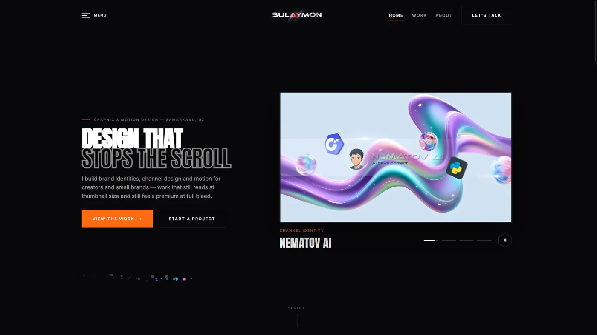
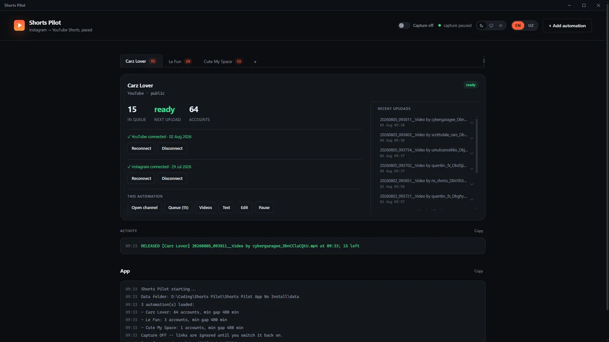
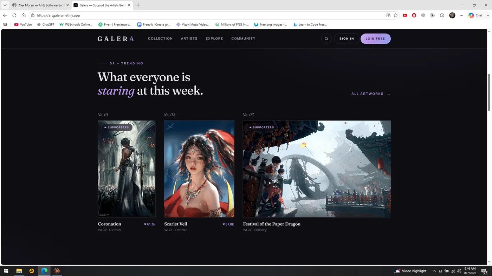

Web apps with a real backend
Multi-page apps on Postgres — accounts, membership tiers and per-item access enforced in the database with row-level security, not trusted to the browser.
Shipping AI to
Production
Designer turned developer, building
desktop apps and web platforms.
Self-directed builds across AI, data and web — four of them running in real and demo use.
(01) — About
I started in motion design, then learned to code to build the tools I wanted. Two years and three working products later, I still build the whole thing myself — database, backend, and the interface people actually touch. Based in Samarkand, Uzbekistan, and looking for my first developer role — remote or on-site.
(02) — Selected work

My graphic and motion design work, and the first website I ever made — stitched together from effects I took apart across the web, then rebuilt once I understood how they worked. Four static pages, a Three.js hero, and 36 projects behind a filterable grid with a lightbox.

A Windows desktop app that watches the clipboard: copy a reel link and it downloads the clip, works out which channel it belongs to, and releases it on a per-channel interval so a burst of links doesn't become a burst of uploads.

A membership platform for digital artists: work stays public, supporters subscribe to monthly tiers and unlock the studio — 4K files, PSDs, process videos. Accounts, pledges and per-artwork access are all enforced in the database with row-level security.

A desktop editor where the AI and the human are equal operators: every edit is one serialisable, invertible command, and both dispatch the same ones. Undo, scripting and AI parity all fall out of that. Version 1 is still in the cutting room.
(03) — Capabilities
Multi-page apps on Postgres — accounts, membership tiers and per-item access enforced in the database with row-level security, not trusted to the browser.
Windows apps people install and leave running: native windows, background schedulers, OAuth into third-party accounts, packaged into an installer that just works.
Joining systems never meant to talk to each other — clipboard to YouTube, ffmpeg pipelines, jobs that hold their own schedule and pick themselves back up after a failure.
Design was my first trade, so interfaces get built from tokens up — and WebGL or scroll animation when a page needs to be remembered, not just read.
(04) — Build log
Graphic and motion design — brand identity, channel art, key visuals, After Effects. My first skill in this industry, and still the reason I notice when something sits four pixels off.
My first website, assembled by taking effects apart from across the internet until I understood why they worked. Nothing taught me faster than breaking someone else's code.
Shorts Pilot. A desktop app watching the clipboard, pacing uploads across channels, holding OAuth tokens safely. The first thing I built that works while I'm asleep.
Galera. Accounts, membership tiers and per-artwork access — enforced by row-level security in the database rather than by trusting the browser.
Cutlass. A video editor where every edit is one invertible command object, so an AI and a human have exactly the same reach. In progress — the hard part is the architecture, not the buttons.
(05) — Contact